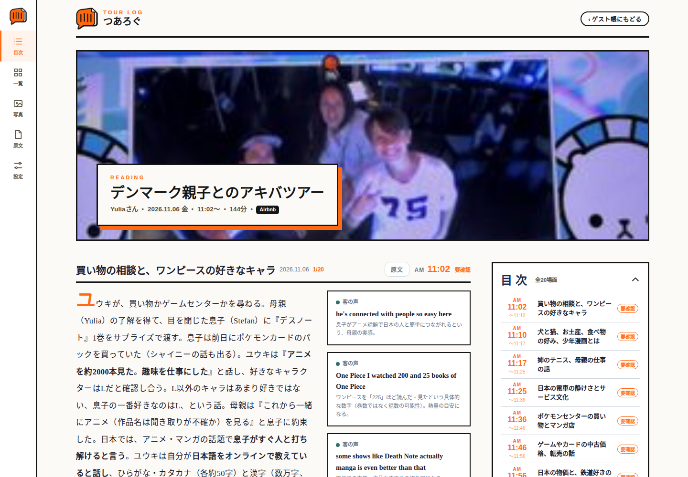
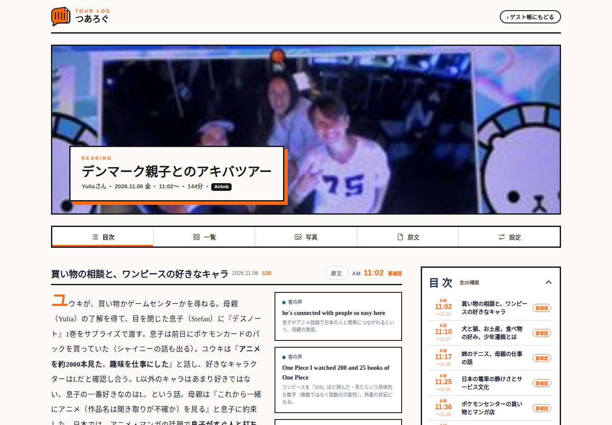
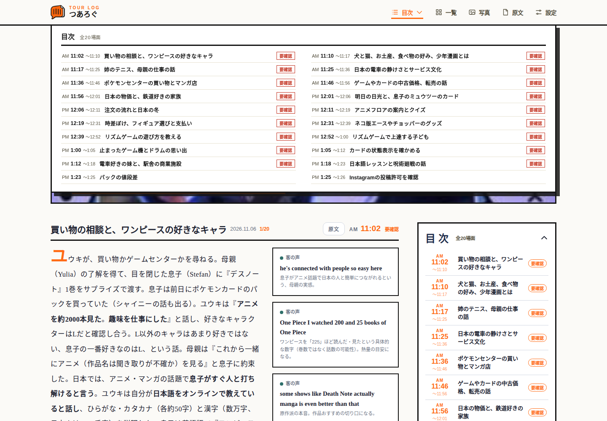
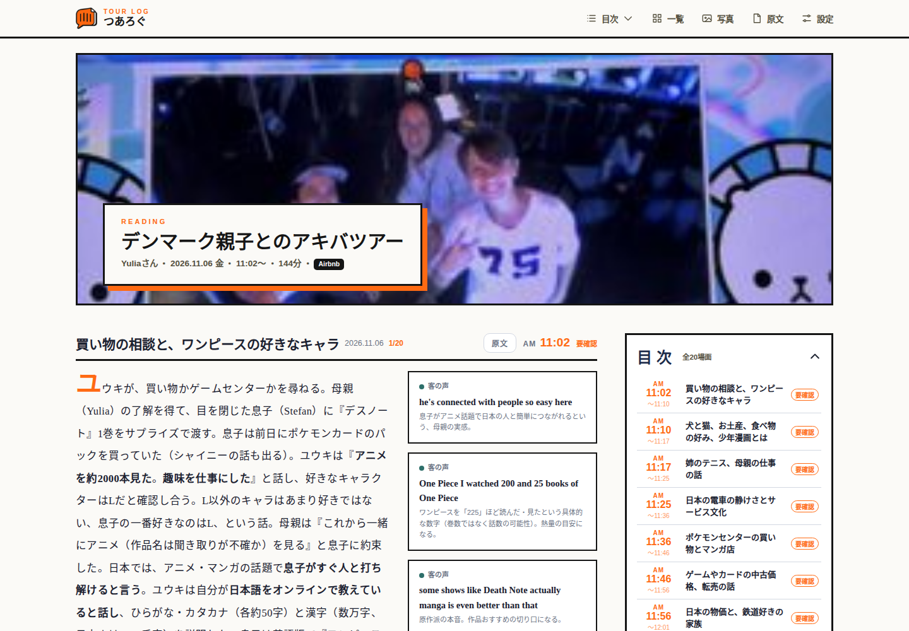

左に「つあろぐ」ロゴ、右に5項目のテキストリンクを置く、PCサイトの定番の形。既存のヘッダー行はこのバーへ統合し、スクロールしても常に画面上部に残るので、どこを読んでいてもすぐ押せる。

ファーストビュー（上部に固定ヘッダー、下部バーなし）
現行のPC表示では、スマホアプリ風のタブバー（目次／一覧／写真／原文／設定）が画面下部に固定されています。 5案ともこの下部バーを外し、ナビゲーションの置き場所と見た目だけを変えた1440px実寸モックです。スマホ表示は現行の下部タブバーのまま。 サンプルはYulia回（デンマーク親子とのアキバツアー／2026年11月6日）の実コンテンツ。本番ページは変更していません。
左に「つあろぐ」ロゴ、右に5項目のテキストリンクを置く、PCサイトの定番の形。既存のヘッダー行はこのバーへ統合し、スクロールしても常に画面上部に残るので、どこを読んでいてもすぐ押せる。
ファーストビュー（上部に固定ヘッダー、下部バーなし）
左端に細い縦レールを固定し、アイコン＋小さなラベルを縦並びにした形。本文エリアはレールの分だけ右へ寄る。ドキュメントサイトや管理画面のような空気感で、常時表示でも横幅を取らない。

ファーストビュー（左端に縦レール）
縦レールを右端に置いた形。本文側にある目次レールとは、画面端の余白で分かれるので干渉しない。案2と並ぶ対案で、ナビを視界の右端に寄せたい場合の選択肢。

ファーストビュー（右端に縦レール、内側の目次レールと分離）
固定バーをなくし、ヒーロー直下にタブ列を組み込んだ形。スクロールで流れていく通常のページ内ナビなので、読んでいる間の画面占有はゼロ。誌面の流れを邪魔しない。

ファーストビュー（ヒーロー直下のタブ列）
上部ヘッダーに一覧・写真・原文・設定を置き、「目次」は押すと全20場面のリストがドロップダウンで開く形。ヘッダーからそのまま目的の場面へ飛べるのが強み。

目次ドロップダウンを開いた状態（全20場面・2カラム）

閉じた状態（通常のヘッダー表示）
制作メモ：全案とも本番のマガジン型レイアウトと実コンテンツ（Yulia回）を土台に、ナビまわりのCSS／HTML差分だけで作ったモックです。スマホ表示（1024px未満）は全案とも現行の下部タブバーのまま。本番（tsuarogu-guestbook/read/）は変更していません。